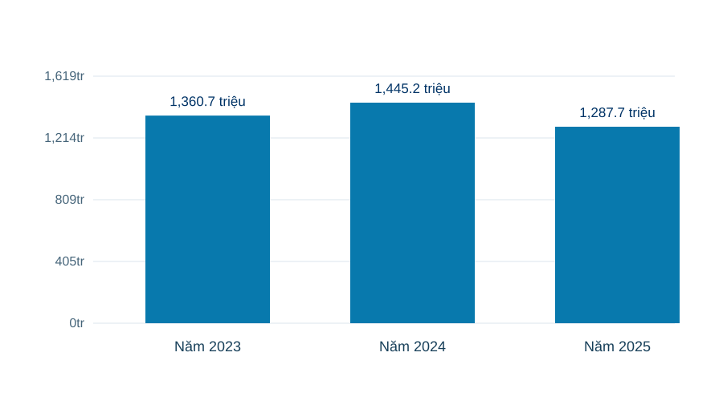
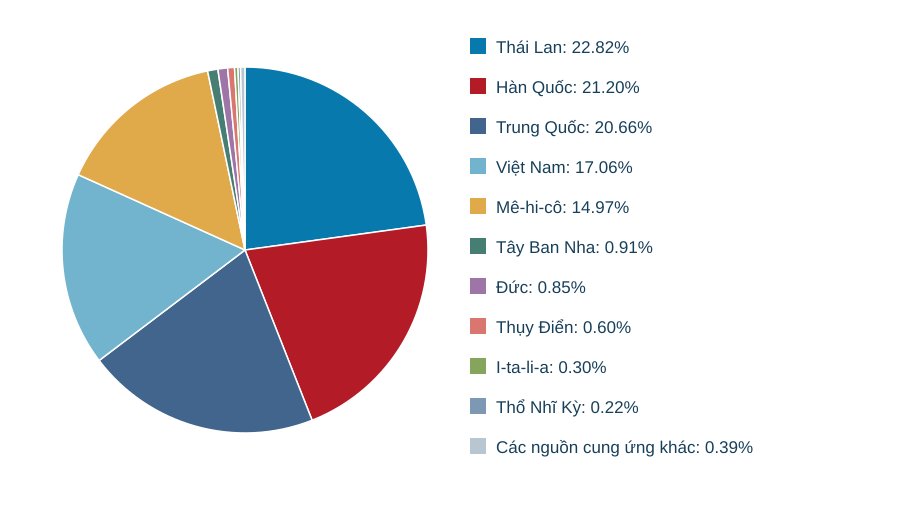
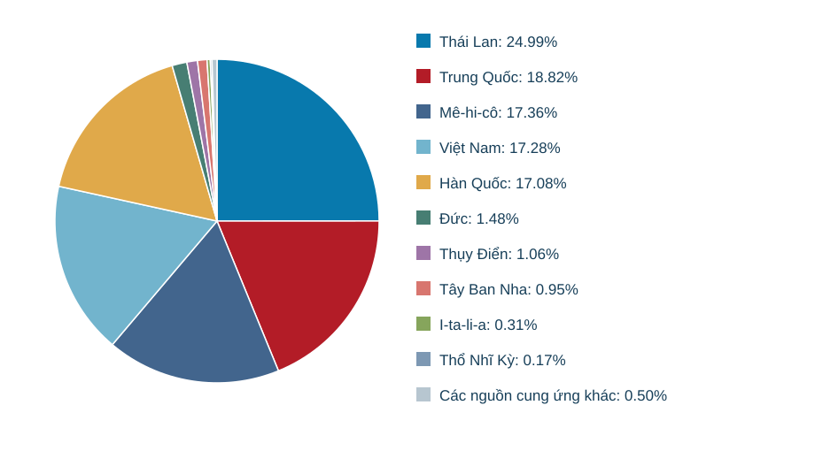
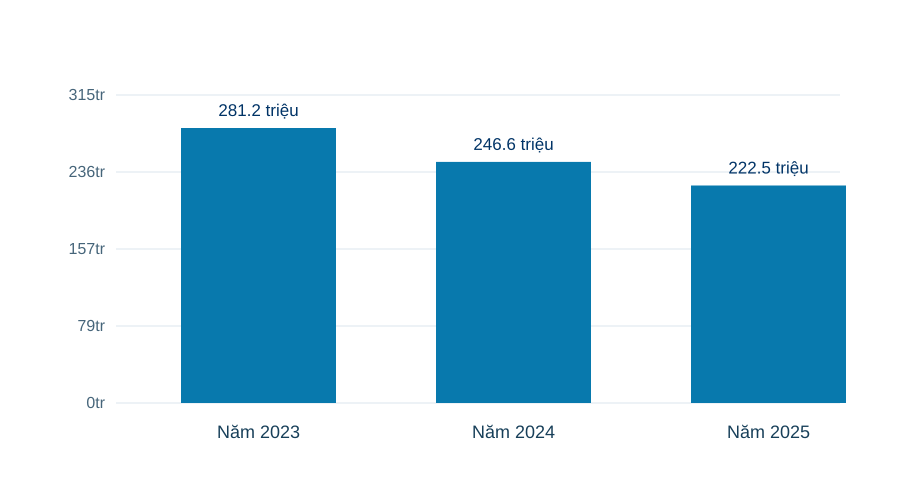

Hoa Kỳ ban hành kết luận sơ bộ vụ việc điều tra chống bán phá giá sản phẩm thép cốt bê tông nhập khẩu từ Việt Nam
Cục Phòng vệ thương mại (PVTM) – Bộ Công Thương nhận được thông tin về việc Bộ Thương mại Hoa Kỳ (DOC) ban hành kết luận sơ bộ vụ việc điều tra chống bán phá giá với sản phẩm thép cốt bê tông nhập khẩu từ Việt Nam. Thông tin vụ việc cụ thể như sau:
1. Thông tin chung
- Sản phẩm bị điều tra: thanh thép cốt bê tông thuộc mã HS 7213.10.0000, 7214.20.0000, 7228.30.8010, 7221.00.0017, 7221.00.0018, 7221.00.0030, 7221.00.0045, 7222.11.0001, 7222.11.0057, 7222.11.0059, 7222.30.0001, 7227.20.0080, 7227.90.6030, 7227.90.6035, 7227.90.6040, 7228.20.1000, và 7228.60.6000.
- Doanh nghiệp bị đơn: DOC đã lựa chọn 01 doanh nghiệp Việt Nam làm bị đơn bắt buộc, trong đó tổng số công ty liên kết có liên quan đến doanh nghiệp này là 10 công ty.
Theo Kết luận sơ bộ vừa ban hành, mức thuế CBPG sơ bộ như sau:
- Công ty bị đơn bắt buộc và các công ty liên kết: Mức thuế CBPG là 121,97%.
- Các công ty còn lại: 130,77%.
Mức thuế CBPG sơ bộ đối với hàng hóa xuất khẩu của Việt Nam hiện đang khá cao. Mức thuế CBPG này cao hơn mức thuế CBPG sơ bộ đối với hàng xuất khẩu từ Bun-ga-ri (52,80%) và Ai Cập (34,20% - 52,73%) cùng bị điều tra. Do đó, các doanh nghiệp Việt Nam cần nỗ lực và hợp tác tích cực để giảm thiểu mức thuế CBPG trong kết luận cuối cùng.
2. Quy trình, thủ tục tiếp theo và khuyến nghị
Theo quy trình điều tra, sau khi có kết luận CBPG sơ bộ, DOC có thể ban hành thêm các bản câu hỏi bổ sung, đồng thời sẽ tiến hành thẩm tra tại chỗ các doanh nghiệp Việt Nam để xác minh thông tin cung cấp.
Dự kiến, DOC sẽ ban hành kết luận cuối cùng điều tra thuế chống bán phá giá vào tháng 7 năm 2026.
Nhằm đạt được kết quả tích cực trong kết luận cuối cùng, Cục PVTM khuyến nghị các doanh nghiệp liên quan như sau:
- Nghiên cứu kết luận sơ bộ của DOC và tham vấn với luật sư tư vấn để chuẩn bị phương án phản biện và tài liệu chứng minh cần thiết.
- Theo sát diễn biến của vụ việc và tiếp tục hợp tác đầy đủ với DOC, chuẩn bị kỹ lưỡng cho giai đoạn thẩm tra tại chỗ.
- Phối hợp tích cực với Cục PVTM trong các giai đoạn tiếp theo của vụ việc và khi DOC tiến hành thẩm tra tại chỗ, kịp thời đề xuất các biện pháp hỗ trợ cần thiết.
Thông tin chi tiết liên hệ: Phòng Xử lý PVTM nước ngoài, Cục PVTM, Bộ Công Thương, 54 Hai Bà Trưng, Cửa Nam, Hà Nội, Email: hanv@moit.gov.vn, nganha@moit.gov.vn.
TIN NƯỚC NGOÀI
Vương quốc Anh khởi xướng điều tra chống bán phá giá và chống trợ cấp đối với bình thủy tinh từ Trung Quốc và Thổ Nhĩ Kỳ
Cơ quan Phòng vệ Thương mại Vương quốc Anh (TRA) đã khởi xướng các cuộc điều tra đối với bình thủy tinh nhập khẩu từ Trung Quốc và Thổ Nhĩ Kỳ nhằm điều tra các hành vi bán phá giá và trợ cấp có gây thiệt hại cho ngành sản xuất trong nước hay không.
Theo TRA, các cuộc điều tra được tiến hành nhằm xác định liệu hàng hóa nhập khẩu có đang được bán phá giá hoặc trợ cấp, gây thiệt hại đáng kể cho ngành sản xuất nội địa và liệu có cần áp dụng các biện pháp phòng vệ thương mại phù hợp hay không.
Cụ thể, TRA đang tiến hành điều tra chống trợ cấp đối với sản phẩm bình thủy tinh nhập khẩu từ Thổ Nhĩ Kỳ, bao gồm các loại chai và lọ thủy tinh, đồng thời điều tra chống bán phá giá đối với các sản phẩm tương tự nhập khẩu từ Trung Quốc.
Theo bà Jessica Blakely và bà Carmen Suarez, lãnh đạo của TRA, các sản phẩm bình thủy tinh đóng vai trò quan trọng trong nhiều chuỗi cung ứng của nền kinh tế Anh cũng như trong đời sống hằng ngày của các hộ gia đình. Các cuộc điều tra do TRA khởi xướng sẽ xem xét liệu ngành sản xuất thủy tinh của Anh có đang bị thiệt hại do cạnh tranh không công bằng từ hàng nhập khẩu hay không, đồng thời đánh giá các biện pháp cần thiết nhằm bảo vệ ngành sản xuất trong nước.
TRA đã khởi xướng các cuộc điều tra sau khi tiếp nhận đơn yêu cầu điều tra của đại diện ngành sản xuất bình thủy tinh của Anh. Đại diện TRA cho biết nếu kết luận điều tra cho thấy có thiệt hại do bán phá giá hoặc trợ cấp gây ra, cơ quan này có thể kiến nghị Bộ trưởng Bộ Kinh doanh và Thương mại Anh áp dụng các biện pháp phòng vệ thương mại mới.
Các hành vi thương mại không công bằng có thể ảnh hưởng đến giá cả và khả năng cạnh tranh của các sản phẩm bình thủy tinh tại Anh. Trong vụ việc liên quan đến Thổ Nhĩ Kỳ, TRA đang xem xét liệu Chính phủ nước này có trợ cấp cho các nhà sản xuất bình thủy tinh hay không, qua đó giúp họ bán sản phẩm tại thị trường Anh với giá thấp hơn giá trị thông thường. Các hình thức trợ cấp có thể bao gồm hỗ trợ tài chính từ ngân sách nhà nước, các khoản vay ưu đãi hoặc miễn giảm thuế.
Trong khi đó, cuộc điều tra đối với hàng nhập khẩu từ Trung Quốc tập trung xem xét liệu các nhà xuất khẩu bình thủy tinh có thực hiện hành vi bán phá giá tại thị trường Anh hay không, tức là bán sản phẩm ra nước ngoài với giá thấp hơn giá bán tại thị trường Trung Quốc hoặc thấp hơn chi phí sản xuất.
Theo TRA nếu các hành vi bán phá giá hoặc trợ cấp không được xử lý, ngành sản xuất trong nước có thể tiếp tục chịu thiệt hại do hàng hóa nhập khẩu được bán với giá thấp bất thường trên thị trường Anh.
Tổng hợp từ packaginginsights.com
TIN NƯỚC NGOÀI
Hoa Kỳ ban hành kết luận cuối cùng trong vụ điều tra chống bán phá giá đối với thép cốt bê tông từ An-giê-ri
Ngày 03/3/2026, Bộ Thương mại Hoa Kỳ (DOC) ban hành kết luận cuối cùng trong vụ điều tra chống bán phá giá đối với sản phẩm thép cốt bê tông nhập khẩu từ An-giê-ri, qua đó xác định rằng sản phẩm này được bán vào thị trường Hoa Kỳ với giá thấp hơn giá trị thông thường.
Thời kỳ điều tra từ ngày 1/4/2024 đến ngày 31/3/2025. Sản phẩm thuộc phạm vi điều tra là thép thanh cốt bê tông, bao gồm các thanh thép dạng thẳng hoặc dạng cuộn, với mọi chủng loại luyện kim, chiều dài, đường kính và cấp độ.
Theo kết luận của DOC, biên độ phá giá đối với doanh nghiệp Tosyali Iron Steel Industry Algeria SPA (Tosyali) được xác định ở mức 127,32%. Mức thuế chống bán phá giá trên cũng được áp dụng tương tự đối với tất cả các nhà xuất khẩu và nhà sản xuất khác của An-giê-ri.
Ở một diễn biến khác, DOC cũng đã ban hành kết luận sơ bộ trong vụ việc điều tra chống bán phá giá đối với sản phẩm thép cốt bê tông nhập khẩu từ Việt Nam, Bun-ga-ri và Ai Cập. Trên cơ sở kết luận sơ bộ, DOC đã quyết định áp thuế chống bán phá giá tạm thời đối với sản phẩm nhập khẩu từ 3 quốc gia này. Mức thuế chống bán phá giá tạm thời được áp dụng dao động trong khoảng từ 34,2% đến 130,77%.
Tổng hợp từ https://yieh.com
TIN NƯỚC NGOÀI
U-crai-na khởi xướng điều tra chống bán phá giá đối với ống thép hàn không mạ kẽm từ Thổ Nhĩ Kỳ
U-crai-na đã khởi xướng điều tra chống bán phá giá đối với sản phẩm ống thép hàn không mạ kẽm (ống thép đen) có xuất xứ từ Thổ Nhĩ Kỳ. Sản phẩm thuộc phạm vi điều tra được phân loại theo các mã HS: 7306 30 49 90, 7306 30 77 90, 7306 30 80 90, 7306 30 12 00, 7306 61 92 00 và 7306 61 99 00, Trên cơ sở xem xét đơn yêu cầu điều tra của một nhóm các nhà sản xuất trong nước, Ủy ban Liên ngành về Thương mại Quốc tế U-crai-na (ICIT) đã ban hành quyết định khởi xướng điều tra vụ việc. Các doanh nghiệp nộp đơn gồm: PJSC “Mariupol Ilyich Iron and Steel Works”, LLC “DMZ Kominmet”, PJSC “Pipe Plant Trubostal”, LLC “Metinvest-SMC” và PJSC “Zaporizhstal”.
Sau khi xem xét đơn yêu cầu, ICIT kết luận rằng đơn yêu cầu điều tra đã cung cấp các bằng chứng sơ bộ đầy đủ và hợp lý cho thấy sản phẩm ống thép hàn không mạ kẽm nhập khẩu từ Thổ Nhĩ Kỳ có dấu hiệu bán phá giá vào thị trường U-crai-na. Đồng thời, kết quả xem xét sơ bộ cho thấy biên độ phá giá không ở mức tối thiểu, trong khi khối lượng nhập khẩu đạt ngưỡng đáng kể, đáp ứng các điều kiện để khởi xướng điều tra theo quy định về phòng vệ thương mại.
Theo thông tin trong hồ sơ vụ việc, trong thời kỳ điều tra từ năm 2021 đến quý I/2025, lượng nhập khẩu ống thép hàn không mạ kẽm từ Thổ Nhĩ Kỳ vào U-crai-na đã tăng hơn 400%. So với mức tiêu thụ và sản lượng sản xuất của các sản phẩm tương tự tại U-crai-na, mức tăng lần lượt đạt 348% và 692%.
Ngoài ra, giá nhập khẩu trung bình của sản phẩm này từ Thổ Nhĩ Kỳ thấp hơn giá thành sản xuất của sản phẩm tương tự do các nhà sản xuất trong nước sản xuất. Theo đánh giá của các doanh nghiệp nộp đơn yêu cầu, tình trạng này đã gây tác động tiêu cực đến ngành sản xuất nội địa, xu hướng này đã làm suy giảm các chỉ số hoạt động của ngành sản xuất nội địa, bao gồm sản lượng, doanh số bán hàng trên thị trường nội địa và mức độ sử dụng công suất.
Theo quyết định của ICIT, Bộ Kinh tế U-crai-na được giao chủ trì tiến hành điều tra vụ việc. Các bên liên quan có 30 ngày kể từ ngày thông báo để đăng ký tham gia vụ việc, trong thời hạn nộp ý kiến và thông tin bằng văn bản là 60 ngày. Quyết định khởi xướng điều tra vụ việc có hiệu lực kể từ ngày được công bố chính thức.
Tổng hợp từ https://agronews.ua
TIN NƯỚC NGOÀI
In-đô-nê-xi-a đề nghị WTO cho phép đình chỉ nhượng bộ thương mại đối với EU trong tranh chấp dầu cọ
Chính phủ In-đô-nê-xi-a đã đề nghị Cơ quan Giải quyết tranh chấp (DSB) của Tổ chức Thương mại thế giới (WTO) cho phép đình chỉ các nhượng bộ và nghĩa vụ thương mại đối với Liên minh châu Âu (EU), sau khi cho rằng EU chưa thực hiện đầy đủ các nghĩa vụ theo phán quyết của WTO liên quan đến tranh chấp dầu cọ.
Ngày 07/3/2026, Bộ trưởng Bộ Thương mại In-đô-nê-xi-a Budi Santoso cho biết động thái này được đưa ra sau khi EU không đáp ứng thời hạn điều chỉnh chính sách hoặc chưa tuân thủ đầy đủ các kết luận và khuyến nghị của Ban Hội thẩm WTO trong vụ tranh chấp dầu cọ (DS593).
Theo Bộ trưởng Budi Santoso, đề xuất đình chỉ nhượng bộ trước mắt sẽ tập trung vào lĩnh vực hàng hóa, song cũng có thể được mở rộng sang các lĩnh vực khác nếu cần thiết. In-đô-nê-xi-a sẽ tiến hành tính toán thận trọng mức độ thiệt hại nhằm bảo đảm việc xử lý vụ việc hiệu quả, đồng thời duy trì quan hệ thương mại song phương với EU.
Bộ trưởng Budi Santoso cho biết đề xuất này được đưa ra trên cơ sở Điều 22.2 của Thỏa thuận về các Quy tắc và Thủ tục điều chỉnh việc giải quyết tranh chấp (DSU) của WTO, trong bối cảnh EU chưa điều chỉnh các chính sách liên quan đến dầu cọ theo đúng phán quyết và khuyến nghị của Ban Hội thẩm WTO.
Ngoài ra, EU cũng chưa đưa ra phương án bồi thường thỏa đáng cho In-đô-nê-xi-a do chưa thực hiện đầy đủ các nghĩa vụ theo quy định của WTO.
Trong trường hợp EU tiếp tục không tuân thủ phán quyết của Ban Hội thẩm WTO, In-đô-nê-xi-a có thể đề nghị DSB cho phép đình chỉ nhượng bộ nhằm bảo vệ quyền lợi của mình.
Theo Bộ trưởng Budi Santoso, các bước đi của Chính phủ In-đô-nê-xi-a đã được phối hợp giữa nhiều cơ quan chức năng và nhận được sự ủng hộ của cộng đồng doanh nghiệp, bao gồm Hiệp hội các nhà sản xuất dầu cọ In-đô-nê-xi-an.
Đại diện các doanh nghiệp In-đô-nê-xi-a cho biết thiệt hại hằng năm của ngành dầu cọ là rất lớn do mất đi giá trị xuất khẩu tiềm năng sang thị trường EU.
Tổng hợp từ businesstoday.com.my
TIN NƯỚC NGOÀI
Số lượng đơn yêu cầu điều tra chống bán phá giá đạt mức kỷ lục tại Hàn Quốc
Năm vừa qua, số vụ việc doanh nghiệp trong nước yêu cầu Chính phủ Hàn Quốc tiến hành điều tra chống bán phá giá đã đạt mức cao kỷ lục. Nguyên nhân chủ yếu được cho là do tình trạng nhiều sản phẩm của Trung Quốc xuất khẩu sang thị trường Hàn Quốc với giá thấp hơn giá thông thường do dư thừa nguồn cung ở một số ngành công nghiệp chủ chốt.
Trong năm qua, Ủy ban Thương mại Hàn Quốc trực thuộc Bộ Thương mại, Công nghiệp và Năng lượng Hàn Quốc đã tiếp nhận tổng cộng 13 đơn yêu cầu điều tra chống bán phá giá từ các doanh nghiệp trong nước, mức cao nhất kể từ khi Ủy ban được thành lập vào năm 1987. Trong đó, 9 vụ việc liên quan đến hàng hóa từ Trung Quốc, tiếp theo là Liên minh châu Âu với 3 vụ, Thái Lan 2 vụ và Nhật Bản 1 vụ.
Các ngành chịu tác động lớn nhất từ hành vi bán phá giá là thép và hóa dầu. Trong tổng số 13 vụ việc được tiếp nhận trong năm qua, 10 vụ liên quan đến hai ngành này, bao gồm 5 vụ đối với thép và 5 vụ đối với hóa dầu. Hai lĩnh vực này chiếm khoảng 70% tổng số đơn đề nghị điều tra chống bán phá giá trong vòng 5 năm gần đây.
Sản phẩm giá rẻ từ Trung Quốc, được cho là hưởng trợ cấp chính phủ ngày càng gia tăng gây thiệt hại nghiêm trọng cho nhiều ngành công nghiệp nội địa. Đối với ngành thép, khi nhiều quốc gia trên thế giới, trong đó có chính quyền Hoa Kỳ dưới thời Tổng thống Donald Trump, đã gia tăng rào cản thương mại như áp thuế 50% đối với thép nhập khẩu. Theo đó, áp lực xuất khẩu thép giá rẻ sang Hàn Quốc càng gia tăng. Trước tình hình đó, Chính phủ Hàn Quốc cũng đã quyết định áp thuế chống bán phá giá đối với 4 sản phẩm thép nhập khẩu từ Trung Quốc. Trong tổng số 8 vụ việc áp thuế chống bán phá giá hiện nay, một nửa liên quan đến các sản phẩm thép của Trung Quốc.
Bên cạnh đó, kể từ năm 2024, các đơn yêu cầu điều tra chống bán phá giá đối với các sản phẩm thép tại Hàn Quốc gia tăng mạnh mẽ, tập trung vào các sản phẩm có quy mô thị trường lớn, lên tới lên tới 10 nghìn tỷ won. Năm 2025, quy mô thị trường trung bình của các sản phẩm bị yêu cầu điều tra đạt 1.797,1 tỷ won, tăng 352% so với mức 397,6 tỷ won của ba năm trước. Điều này cho thấy thiệt hại do hành vi bán phá giá đang lan rộng sang các ngành công nghiệp trọng điểm có quy mô lớn hơn so với trước đây.
Ngày 22/1/2026, Ủy ban Thương mại Hàn Quốc đã ban hành kết luận cuối cùng và kiến nghị Bộ Kinh tế và Tài chính Hàn Quốc áp thuế chống bán phá giá 43,35% trong thời hạn 5 năm đối với cáp quang Singelmode nhập khẩu từ Trung Quốc sử dụng trong cáp truyền thông quang học.
Đối với ống đồng liền mạch nhập khẩu từ Thái Lan, Ủy ban đưa ra kết luận sơ bộ về việc ngành sản xuất trong nước bị thiệt hại, đồng thời kiến nghị áp dụng thuế chống bán phá giá tạm thời từ 3,65% đến 8,41%. Các sản phẩm này được sử dụng phổ biến trong thiết bị gia dụng như điều hòa không khí, tủ lạnh, cũng như trong các hệ thống sưởi, thông gió và điều hòa không khí.
Ông Seo Garam, Ủy viên thường trực của Ủy ban Thương mại Hàn Quốc, cho biết: “Trong bối cảnh môi trường thương mại quốc tế thay đổi nhanh chóng, khi các nền kinh tế lớn như Hoa Kỳ và Liên minh châu Âu gia tăng các rào cản thương mại, số lượng báo cáo về thiệt hại từ các doanh nghiệp trong nước dự kiến sẽ tiếp tục tăng trong năm 2026.” Ông cũng nhấn mạnh rằng Uỷ ban sẽ áp dụng các biện pháp cần thiết nhằm bảo vệ ngành sản xuất trong nước, đồng thời tăng cường trao đổi với cộng đồng doanh nghiệp.
Tổng hợp từ The Chosunilbo
TIN NƯỚC NGOÀI
Ủy ban châu Âu khởi động đàm phán ba bên về biện pháp phòng vệ thương mại mới đối với sản phẩm thép nhằm xử lý tình trạng dư thừa công suất thép toàn cầu
Ngày 24/02/2026, Ủy ban châu Âu thông báo bắt đầu các cuộc đàm phán ba bên liên quan đến biện pháp phòng vệ thương mại của Liên minh châu Âu đối với sản phẩm thép, nhằm giải quyết các tác động tiêu cực từ tình trạng dư thừa công suất thép toàn cầu. Ông Maros Sefcovic, Ủy viên châu Âu về Thương mại và An ninh kinh tế, đại diện Ủy ban châu Âu tham gia vòng đàm phán đầu tiên với Nghị viện châu Âu và Hội đồng Liên minh châu Âu.
Biện pháp phòng vệ thương mại mới được đề xuất nhằm thay thế biện pháp tự vệ đối với sản phẩm thép đang được EU dự kiến áp dụng từ ngày 01/7/2026. Mục tiêu của biện pháp mới này là bảo đảm việc tiếp tục bảo vệ ngành thép của EU khỏi những tác động bất lợi của tình trạng dư thừa công suất thép toàn cầu, đồng thời cập nhật và điều chỉnh khuôn khổ chính sách để thích ứng với diễn biến mới của thị trường thép thế giới.
Các nội dung trong đề xuất của Uỷ ban châu Âu về việc cải cách biện pháp tự vệ đối với thép bao gồm:
- Giảm lượng nhập khẩu được miễn thuế theo hạn ngạch xuống còn 18,3 triệu tấn mỗi năm, tương đương giảm 47% so với mức hạn ngạch của năm 2024;
- Tăng mức thuế đối với lượng nhập khẩu vượt hạn ngạch lên 50%;
- Áp dụng đối với hàng nhập khẩu từ tất cả các nguồn trên thế giới, ngoại trừ các nước thuộc Khu vực Kinh tế châu Âu (EEA);
- Tăng cường khả năng truy xuất nguồn gốc của thị trường thép bằng cách đưa ra yêu cầu về quá trình nấu chảy và đúc để ngăn chặn hành vi gian lận xuất xứ.
Theo Ủy ban châu Âu, công suất dư thừa thép toàn cầu có thể đạt khoảng 721 triệu tấn vào năm 2027, tương đương khoảng 5 lần mức tiêu thụ thép hằng năm của Liên minh châu Âu. Biện pháp mới được xem là công cụ nhằm bảo vệ nền công nghiệp của Liên minh châu Âu, hỗ trợ mục tiêu giảm khí thải cá-bon trong ngành thép và bảo vệ khoảng 2,5 triệu việc làm liên quan đến hoạt động sản xuất thép.
Các cuộc đàm phán ba bên giữa Ủy ban châu Âu, Nghị viện châu Âu và Hội đồng châu Âu sẽ tập trung hoàn thiện văn bản pháp lý, nhằm bảo đảm khuôn khổ biện pháp mới có thể có hiệu lực từ ngày 01/7/2026.
Ủy ban châu Âu cũng cho biết biện pháp phòng vệ thương mại mới này được áp dụng phù hợp với các quy định của Tổ chức Thương mại thế giới, đồng thời Liên minh châu Âu sẽ tiếp tục phối hợp với các đối tác thương mại quốc tế để tìm kiếm các giải pháp chung nhằm xử lý tình trạng dư thừa công suất thép toàn cầu.
Tổng hợp từ Eurometal
THÔNG TIN XUẤT NHẬP KHẨU
Tình hình xuất khẩu máy giặt dân dụng cỡ lớn vào thị trường Hoa Kỳ
Mô tả mặt hàng máy giặt dân dụng cỡ lớn
Máy giặt dân dụng cỡ lớn (Large Residential Washers) là nhóm thiết bị điện gia dụng được thiết kế để phục vụ nhu cầu giặt giũ với khối lượng lớn trong các hộ gia đình đông thành viên, các khu ký túc xá, nhà trọ, cơ sở lưu trú nhỏ hoặc các cơ sở dịch vụ giặt là quy mô hộ gia đình. Sản phẩm này thường có dung tích và tải trọng giặt cao hơn so với các loại máy giặt thông thường, phổ biến trong khoảng từ 12 kg đến trên 20 kg quần áo khô cho mỗi chu trình giặt, cho phép xử lý lượng đồ giặt lớn như chăn, ga, rèm cửa, quần áo dày hoặc khối lượng quần áo của nhiều người trong cùng một lần vận hành. Máy giặt dân dụng cỡ lớn thường được thiết kế dưới hai dạng chính là máy giặt cửa trên (lồng đứng) và máy giặt cửa trước (lồng ngang), trong đó mỗi loại có những ưu điểm riêng về hiệu quả giặt sạch, tiết kiệm nước, tiết kiệm điện năng và khả năng bảo vệ sợi vải.
Về cấu tạo, máy giặt dân dụng cỡ lớn bao gồm các bộ phận chính như lồng giặt, động cơ truyền động, bảng điều khiển điện tử, hệ thống cấp và xả nước, cùng các cảm biến thông minh giúp điều chỉnh chương trình giặt phù hợp với khối lượng và loại vải. Nhiều dòng sản phẩm hiện đại được tích hợp các công nghệ tiên tiến như giặt hơi nước, giặt nước nóng, công nghệ inverter tiết kiệm điện, cảm biến tự động cân bằng tải trọng, cùng các chương trình giặt chuyên biệt cho từng loại vải như cotton, sợi tổng hợp, đồ len hoặc đồ thể thao. Ngoài ra, một số mẫu máy còn được trang bị khả năng kết nối thông minh với điện thoại thông minh thông qua các ứng dụng điều khiển từ xa, giúp người dùng theo dõi và điều chỉnh quá trình giặt một cách thuận tiện.
Nhìn chung, máy giặt dân dụng cỡ lớn được đánh giá là giải pháp hiệu quả nhằm tối ưu hóa thời gian và công sức cho hoạt động giặt giũ trong gia đình, đồng thời nâng cao hiệu quả sử dụng năng lượng và nước nhờ các công nghệ hiện đại. Với xu hướng gia tăng quy mô hộ gia đình, sự phát triển của các khu chung cư, ký túc xá và dịch vụ giặt là nhỏ lẻ, nhu cầu đối với các dòng máy giặt có dung tích lớn ngày càng tăng, khiến mặt hàng này trở thành một phân khúc quan trọng trong thị trường thiết bị gia dụng toàn cầu.
Quy trình sản xuất máy giặt dân dụng cỡ lớn
Quy trình sản xuất máy giặt dân dụng cỡ lớn là một chuỗi các công đoạn công nghiệp phức tạp, kết hợp giữa gia công cơ khí chính xác, sản xuất linh kiện điện - điện tử và lắp ráp tự động nhằm tạo ra sản phẩm có độ bền cao, vận hành ổn định và đáp ứng các tiêu chuẩn an toàn kỹ thuật. Trước hết, quá trình sản xuất bắt đầu từ khâu thiết kế và phát triển sản phẩm, trong đó các nhà sản xuất tiến hành nghiên cứu cấu trúc máy, dung tích lồng giặt, công suất động cơ, hệ thống điều khiển và các tính năng công nghệ phù hợp với nhu cầu sử dụng của người tiêu dùng. Sau khi hoàn thiện bản thiết kế kỹ thuật, các nguyên vật liệu và linh kiện cần thiết như thép không gỉ, nhựa kỹ thuật, bảng mạch điện tử, động cơ điện, dây dẫn, cảm biến và các bộ phận cơ khí được chuẩn bị và kiểm tra chất lượng trước khi đưa vào dây chuyền sản xuất.
Tiếp theo là công đoạn gia công các bộ phận chính của máy giặt. Vỏ máy và khung máy thường được sản xuất từ các tấm thép mạ hoặc thép không gỉ thông qua các bước cắt, dập, uốn và hàn nhằm tạo ra kết cấu vững chắc, sau đó được xử lý bề mặt và sơn tĩnh điện để tăng khả năng chống ăn mòn và nâng cao tính thẩm mỹ. Lồng giặt – bộ phận quan trọng nhất của máy – thường được chế tạo từ thép không gỉ với nhiều lỗ nhỏ được đục chính xác để bảo đảm khả năng thoát nước và giảm hư hại cho sợi vải. Song song với đó, các bộ phận như động cơ truyền động, dây curoa hoặc hệ thống truyền động trực tiếp, bơm xả nước, van cấp nước và bảng mạch điều khiển điện tử cũng được sản xuất hoặc lắp ráp từ các linh kiện chuyên dụng.
Sau khi các linh kiện và bộ phận riêng lẻ được hoàn thiện, chúng được chuyển sang dây chuyền lắp ráp, nơi các công nhân và hệ thống máy móc tự động tiến hành lắp đặt các bộ phận theo trình tự kỹ thuật nghiêm ngặt. Quá trình này bao gồm việc gắn động cơ vào khung máy, lắp đặt lồng giặt và hệ thống treo giảm rung, kết nối hệ thống điện và bảng điều khiển, lắp đặt vỏ máy, nắp hoặc cửa máy, cùng các bộ phận phụ trợ khác. Đối với các dòng máy giặt dân dụng cỡ lớn hiện đại, nhiều công đoạn lắp ráp được tự động hóa nhằm bảo đảm độ chính xác cao, giảm sai sót kỹ thuật và nâng cao năng suất sản xuất.
Sau khi hoàn thành lắp ráp, mỗi sản phẩm đều phải trải qua các bước kiểm tra chất lượng nghiêm ngặt. Các nhà sản xuất tiến hành thử nghiệm vận hành thực tế như chạy thử chu trình giặt, kiểm tra độ rung và tiếng ồn của động cơ, kiểm tra khả năng cấp và xả nước, độ kín của hệ thống, cũng như độ ổn định của các chương trình điều khiển điện tử. Đồng thời, sản phẩm còn được kiểm tra về an toàn điện, khả năng tiết kiệm năng lượng và mức tiêu thụ nước để bảo đảm tuân thủ các tiêu chuẩn kỹ thuật và quy định của thị trường tiêu thụ.
Cuối cùng, các máy giặt đạt tiêu chuẩn sẽ được làm sạch, đóng gói và dán nhãn trước khi đưa vào hệ thống phân phối. Khâu đóng gói thường sử dụng các vật liệu chống va đập như xốp định hình, thùng carton cứng và lớp bảo vệ bề mặt nhằm tránh hư hỏng trong quá trình vận chuyển và lưu kho. Nhìn chung, quy trình sản xuất máy giặt dân dụng cỡ lớn đòi hỏi sự phối hợp chặt chẽ giữa công nghệ cơ khí, điện - điện tử và quản lý chất lượng hiện đại, nhằm tạo ra sản phẩm có hiệu suất giặt cao, độ bền lâu dài và đáp ứng các yêu cầu ngày càng khắt khe của thị trường thiết bị gia dụng.
Thị trường máy giặt dân dụng cỡ lớn của Hoa Kỳ và xu hướng
Thị trường máy giặt dân dụng cỡ lớn tại Hoa Kỳ là một trong những thị trường thiết bị gia dụng phát triển và có quy mô lớn nhất thế giới, với mức độ thâm nhập sản phẩm cao và nhu cầu tiêu dùng ổn định. Trong những năm gần đây, thị trường máy giặt gia dụng của Hoa Kỳ duy trì xu hướng tăng trưởng khá tích cực nhờ sự gia tăng thu nhập của người dân, quá trình đô thị hóa, sự phát triển của thị trường nhà ở và nhu cầu thay thế các thiết bị gia dụng cũ bằng các sản phẩm hiện đại, tiết kiệm năng lượng. Theo các báo cáo nghiên cứu thị trường, quy mô thị trường máy giặt tại Hoa Kỳ đạt khoảng 6,35 tỷ USD vào năm 2024 và dự kiến có thể tăng lên khoảng 8,91 tỷ USD vào năm 2030, với tốc độ tăng trưởng bình quân khoảng 5,8%/năm.
Trong cơ cấu thị trường, phân khúc máy giặt có dung tích lớn (thường từ trên 8 kg hoặc trên 4,5 cubic feet) đang ngày càng chiếm vai trò quan trọng, đặc biệt trong các hộ gia đình đông người hoặc các gia đình có nhu cầu giặt giũ thường xuyên với khối lượng lớn như chăn, ga và quần áo dày. Nhiều nghiên cứu cho thấy nhóm máy giặt dung tích lớn chiếm tỷ trọng đáng kể trong tổng doanh số máy giặt gia dụng tại Hoa Kỳ, với hơn 45% thị phần thuộc về các dòng máy có tải trọng trên 8 kg. Xu hướng này phản ánh nhu cầu của các hộ gia đình muốn giảm số lần giặt, tiết kiệm thời gian và nâng cao hiệu quả sử dụng thiết bị.
Bên cạnh yếu tố dung tích, thị trường máy giặt dân dụng cỡ lớn tại Hoa Kỳ cũng đang chịu tác động mạnh mẽ từ xu hướng công nghệ và tiêu dùng mới. Người tiêu dùng ngày càng ưu tiên các sản phẩm có tích hợp công nghệ thông minh như cảm biến tự động, trí tuệ nhân tạo (AI), kết nối Internet vạn vật (IoT) và khả năng điều khiển qua ứng dụng di động. Các dòng máy giặt hiện đại có thể tự động nhận diện khối lượng đồ giặt, loại vải và mức độ bẩn để điều chỉnh chu trình giặt phù hợp, qua đó giúp tiết kiệm nước, điện năng và chất tẩy rửa. Đồng thời, các tính năng đa chức năng như giặt kép (dual wash), kết hợp giặt – sấy trong một thiết bị hoặc các chương trình giặt chuyên biệt cho từng loại vải cũng đang trở thành xu hướng nổi bật trên thị trường.
Ngoài ra, yếu tố tiết kiệm năng lượng và bảo vệ môi trường cũng đóng vai trò quan trọng trong sự phát triển của thị trường. Người tiêu dùng Hoa Kỳ ngày càng quan tâm đến các thiết bị gia dụng có hiệu suất năng lượng cao và mức tiêu thụ nước thấp, phù hợp với các tiêu chuẩn hiệu quả năng lượng và chính sách khuyến khích sử dụng thiết bị tiết kiệm tài nguyên của chính phủ. Điều này thúc đẩy các nhà sản xuất tập trung phát triển các dòng máy giặt tự động thế hệ mới, sử dụng công nghệ inverter, chế độ giặt nước lạnh và các chương trình tối ưu hóa tiêu thụ năng lượng.
Một xu hướng đáng chú ý khác là sự tái cấu trúc chuỗi cung ứng và xu hướng dịch chuyển sản xuất về Hoa Kỳ. Một số tập đoàn sản xuất thiết bị gia dụng lớn đang tăng cường đầu tư vào các nhà máy tại Hoa Kỳ nhằm giảm phụ thuộc vào nhập khẩu, rút ngắn chuỗi cung ứng và đáp ứng nhanh hơn nhu cầu của thị trường nội địa. Ví dụ, công ty GE Appliances đã công bố kế hoạch đầu tư hàng trăm triệu USD để mở rộng sản xuất máy giặt tại bang Kentucky và chuyển một phần hoạt động sản xuất từ nước ngoài về Hoa Kỳ trong những năm tới.
Nhìn chung, thị trường máy giặt dân dụng cỡ lớn của Hoa Kỳ được dự báo sẽ tiếp tục tăng trưởng ổn định trong những năm tới, nhờ nhu cầu tiêu dùng bền vững, xu hướng nâng cấp thiết bị gia dụng, sự phát triển của công nghệ thông minh và các yêu cầu ngày càng cao về tiết kiệm năng lượng và bảo vệ môi trường. Trong bối cảnh đó, các nhà sản xuất lớn như Whirlpool Corporation, LG Electronics và Samsung Electronics đang không ngừng đổi mới công nghệ và mở rộng danh mục sản phẩm, nhằm đáp ứng nhu cầu ngày càng đa dạng của người tiêu dùng Hoa Kỳ và duy trì vị thế cạnh tranh trên thị trường thiết bị gia dụng quy mô lớn này.
Tình hình nhập khẩu mặt hàng máy giặt dân dụng cỡ lớn từ các nguồn trên thế giới vào thị trường Hoa Kỳ
Trong giai đoạn 2023–2025, Hoa Kỳ tiếp tục duy trì vị thế là một trong những thị trường nhập khẩu máy giặt dân dụng cỡ lớn lớn nhất trên thế giới, do nhu cầu tiêu dùng ổn định, mức sống cao của người dân và xu hướng sử dụng các thiết bị gia dụng có dung tích lớn, tích hợp nhiều công nghệ hiện đại. Thị trường máy giặt tại Hoa Kỳ có đặc điểm là tỷ lệ sở hữu thiết bị trong các hộ gia đình rất cao, tuy nhiên nhu cầu nhập khẩu vẫn duy trì ở mức đáng kể do hoạt động sản xuất trong nước không đáp ứng hoàn toàn nhu cầu về chủng loại sản phẩm, công nghệ và giá cả. Trong bối cảnh đó, Hoa Kỳ thường xuyên nhập khẩu máy giặt từ nhiều khu vực khác nhau trên thế giới, đặc biệt là từ khu vực châu Á – nơi tập trung nhiều trung tâm sản xuất thiết bị điện gia dụng lớn của toàn cầu.
Theo số liệu của IHS Markit, năm 2023, tổng giá trị nhập khẩu máy giặt dân dụng cỡ lớn từ tất cả các nguồn cung cấp trên thế giới vào Hoa Kỳ đạt 1,4 tỷ USD, trong đó Thái Lan là nhà cung cấp lớn nhất, tiếp theo là các nguồn cung cấp như Việt Nam, Hàn Quốc, Trung Quốc và Mê-hi-cô. Trong năm 2024, trị giá nhập khẩu mặt hàng này có sự gia tăng so với năm 2023, đạt 1,4 tỷ USD. Tuy nhiên, trong năm 2025, trị giá nhập khẩu vào Hoa Kỳ lại có sự sụt giảm đạt 1,3 tỷ USD.
Trong năm 2024 và 2025, xu hướng nhập khẩu máy giặt của Hoa Kỳ tiếp tục chịu ảnh hưởng bởi các yếu tố như biến động chi phí sản xuất toàn cầu, chính sách thương mại và sự tái cấu trúc chuỗi cung ứng của ngành thiết bị gia dụng. Sau các biện pháp phòng vệ thương mại và thuế quan áp dụng đối với một số sản phẩm máy giặt nhập khẩu trong những năm trước, nhiều doanh nghiệp đã điều chỉnh chiến lược sản xuất bằng cách dịch chuyển một phần hoạt động sang các quốc gia Đông Nam Á hoặc Bắc Mỹ nhằm giảm rủi ro thương mại. Điều này dẫn đến xu hướng đa dạng hóa nguồn cung, trong đó tỷ trọng nhập khẩu từ các quốc gia như Thái Lan, Việt Nam và Mê-hi-cô có xu hướng tăng lên, trong khi nguồn cung từ một số thị trường truyền thống có sự điều chỉnh nhất định.
Nhìn chung, trong giai đoạn 2023–2025, thị trường nhập khẩu máy giặt dân dụng cỡ lớn của Hoa Kỳ có đặc điểm nổi bật là quy mô lớn, nguồn cung đa dạng và chịu tác động mạnh mẽ từ các yếu tố thương mại quốc tế và sự dịch chuyển chuỗi cung ứng toàn cầu. Khu vực châu Á vẫn giữ vai trò nguồn cung chủ đạo, trong khi Mexico và một số quốc gia khác trong khu vực Bắc Mỹ và Đông Nam Á ngày càng gia tăng vai trò trong chuỗi cung ứng. Xu hướng này được dự báo sẽ tiếp tục trong những năm tới khi các doanh nghiệp sản xuất thiết bị gia dụng tiếp tục điều chỉnh chiến lược sản xuất và thương mại nhằm thích ứng với môi trường thương mại quốc tế ngày càng phức tạp.
Tổng giá trị nhập khẩu máy giặt dân dụng cỡ lớn sang thị trường Hoa Kỳ từ 2023 đến 2025
Đơn vị: USD

Nguồn: IHS Markit
Năm 2024, Thái Lan là nguồn cung cấp có trị giá xuất khẩu máy giặt dân dụng cỡ lớn lớn nhất sang thị trường Hoa Kỳ, đạt 329,8 triệu USD, chiếm 22,8% tổng kim ngạch nhập khẩu sản phẩm cùng loại của Hoa Kỳ. Hàn Quốc xếp vị trí thứ hai với trị giá xuất khẩu đạt 306,4 triệu USD, chiếm 21,2% tổng kim ngạch nhập khẩu sản phẩm cùng loại của Hoa Kỳ. Trung Quốc xếp vị trí thứ ba với trị giá xuất khẩu đạt 298,6 triệu USD, chiếm 20,7% tổng kim ngạch nhập khẩu sản phẩm cùng loại của Hoa Kỳ. Việt Nam xếp vị trí thứ tư với trị giá xuất khẩu đạt 246,6 triệu USD, chiếm 17,1% tổng kim ngạch nhập khẩu sản phẩm cùng loại của Hoa Kỳ. Mê-hi-cô và Tây Ban Nha lần lượt xếp vị trí thứ năm và thứ sáu trong số các nguồn cung ứng có trị giá xuất khẩu máy giặt dân dụng cỡ lớn lớn nhất sang Hoa Kỳ với trị giá xuất khẩu đạt 216,4 triệu USD và 13,1 triệu USD. Tổng trị giá xuất khẩu máy giặt dân dụng cỡ lớn của mười nguồn cung ứng chính sang thị trường Hoa Kỳ đạt 1,4 tỷ USD, chiếm 99,6% tổng kim ngạch nhập khẩu sản phẩm cùng loại của Hoa Kỳ. Tổng trị giá xuất khẩu máy giặt dân dụng cỡ lớn của các nguồn cung ứng khác đạt 5,6 triệu USD, chiếm 0,4% tổng kim ngạch nhập khẩu sản phẩm cùng loại của Hoa Kỳ.
Năm 2025, Thái Lan tiếp tục là nguồn cung cấp có trị giá xuất khẩu máy giặt dân dụng cỡ lớn lớn nhất sang thị trường Hoa Kỳ, đạt 321,9 triệu USD, chiếm 25% tổng kim ngạch nhập khẩu sản phẩm cùng loại của Hoa Kỳ. Trung Quốc đứng hai với trị giá xuất khẩu đạt 242,3 triệu USD, chiếm 18,8% tổng kim ngạch nhập khẩu sản phẩm cùng loại của Hoa Kỳ. Mê-hi-cô xếp thứ ba với trị giá xuất khẩu đạt 223,5 triệu USD, chiếm 17,4% tổng kim ngạch nhập khẩu sản phẩm cùng loại của Hoa Kỳ. Việt Nam tiếp tục xếp vị trí thứ tư với trị giá xuất khẩu đạt 222,5 triệu USD, chiếm 17,3% tổng kim ngạch nhập khẩu sản phẩm cùng loại của Hoa Kỳ. Hàn Quốc và Đức lần lượt đứng thứ năm và thứ sáu với trị giá xuất khẩu đạt 220 triệu USD và 19,1 triệu USD. Tổng trị giá xuất khẩu máy giặt dân dụng cỡ lớn của mười nguồn cung ứng sang thị trường Hoa Kỳ đạt 1,3 tỷ USD, chiếm 99,5% tổng kim ngạch nhập khẩu sản phầm cùng loại của Hoa Kỳ. Tổng trị giá xuất khẩu máy giặt dân dụng cỡ lớn của các nguồn cung ứng khác đạt 6,5 triệu USD, chiếm 0,5% tổng kim ngạch nhập khẩu sản phẩm cùng loại của Hoa Kỳ.
Các nguồn cung ứng chính vào thị trường Hoa Kỳ năm 2024 và 2025
Đơn vị: USD
Nguồn cung ứng vào Hoa Kỳ
Trị giá NK năm 2024
Trị giá NK năm 2025
2025 so với 2024
Tỷ trọng năm 2024
Tỷ trọng năm 2025
Thái Lan
329.808.035
321.851.664
-2,4%
22,8%
25,0%
Trung Quốc
298.606.935
242.326.263
-18,8%
20,7%
18,8%
Mê-hi-cô
216.361.145
223.521.146
3,3%
15,0%
17,4%
Việt Nam
246.605.906
222.482.441
-9,8%
17,1%
17,3%
Hàn Quốc
306.409.001
219.962.979
-28,2%
21,2%
17,1%
Đức
12.346.988
19.065.174
54,4%
0,9%
1,5%
Thụy Điển
8.707.618
13.614.325
56,3%
0,6%
1,1%
Tây Ban Nha
13.115.406
12.190.519
-7,1%
0,9%
0,9%
I-ta-li-a
4.380.719
4.042.683
-7,7%
0,3%
0,3%
Thổ Nhĩ Kỳ
3.229.377
2.141.777
-33,7%
0,2%
0,2%
Nguồn: IHS Markit
Tỷ trọng các nguồn cung ứng chính nhập khẩu vào Hoa Kỳ năm 2024

Nguồn: IHS Markit
Tỷ trọng các nguồn cung ứng chính nhập khẩu vào Hoa Kỳ năm 2025

Nguồn: IHS Markit
Tình hình nhập khẩu máy giặt dân dụng cỡ lớn vào Hoa Kỳ từ Việt Nam
Theo số liệu của IHS Markit, năm 2023, trị giá xuất khẩu mặt hàng máy giặt dân dụng cỡ lớn của Việt Nam sang thị trường Hoa Kỳ đạt 281,2 triệu USD, chiếm 20,7% trong tổng kim ngạch nhập khẩu sản phẩm cùng loại của Hoa Kỳ, Việt Nam xếp thứ hai trong số các nguồn cung lớn của Hoa Kỳ. Năm 2024, trị giá xuất khẩu mặt hàng này của Việt Nam có sự sụt giảm so với năm trước đó đạt 246,6 triệu USD, chiếm 17,1% tổng kim ngạch nhập khẩu sản phẩm cùng loại của Hoa Kỳ, Việt Nam xếp thứ tư trong số các nguồn cung lớn của Hoa Kỳ. Năm 2025, tổng kim ngạch xuất khẩu mặt hàng máy giặt dân dụng cỡ lớn của Việt Nam tiếp tục giảm đạt 222,5 triệu USD, chiếm 17,3% tổng kim ngạch nhập khẩu mặt hàng cùng loại của Hoa Kỳ, Việt Nam tiếp tục xếp thứ tư trong số các nguồn cung cấp máy giặt dân dụng cỡ lớn lớn nhất sang thị trường Hoa Kỳ.
Nhìn chung, trong giai đoạn 2023–2025, nhập khẩu máy giặt dân dụng cỡ lớn từ Việt Nam vào Hoa Kỳ duy trì thị phần đáng kể trong cơ cấu nguồn cung của Hoa Kỳ. Việt Nam từng bước khẳng định vai trò là một trung tâm sản xuất thiết bị gia dụng quan trọng tại khu vực châu Á, đồng thời trở thành một trong những đối tác cung ứng quan trọng cho thị trường Hoa Kỳ trong lĩnh vực máy giặt gia dụng. Xu hướng này được dự báo sẽ tiếp tục trong thời gian tới khi các doanh nghiệp tiếp tục mở rộng đầu tư sản xuất tại Việt Nam và nhu cầu đối với các thiết bị gia dụng dung tích lớn, tiết kiệm năng lượng tại Hoa Kỳ ngày càng gia tăng.
Tổng trị giá xuất khẩu máy giặt dân dụng cỡ lớn của Việt Nam vào Hoa Kỳ từ năm 2023 đến 2025
Đơn vị: USD

Nguồn: IHS Markit
Cảnh báo và khuyến nghị
Trong bối cảnh kim ngạch xuất khẩu máy giặt dân dụng cỡ lớn của Việt Nam sang thị trường Hoa Kỳ có xu hướng gia tăng trong những năm gần đây, các doanh nghiệp xuất khẩu cần đặc biệt lưu ý đến rủi ro bị Hoa Kỳ điều tra phòng vệ thương mại. Hoa Kỳ là một trong những quốc gia sử dụng các công cụ phòng vệ thương mại nhiều nhất trên thế giới nhằm bảo vệ ngành sản xuất trong nước, bao gồm các biện pháp chống bán phá giá, chống trợ cấp và tự vệ. Hoa Kỳ đã áp dụng thuế chống bán phá giá đối với máy giặt dân dụng cỡ lớn nhập khẩu từ Hàn Quốc, Trung Quốc và Mê-hi-cô. Do đó, khi xuất khẩu sang thị trường này, doanh nghiệp Việt Nam cần nhận thức rõ rằng việc gia tăng nhanh thị phần hoặc kim ngạch xuất khẩu có thể trở thành yếu tố khiến sản phẩm bị các nhà sản xuất nội địa của Hoa Kỳ theo dõi và kiến nghị cơ quan chức năng tiến hành điều tra phòng vệ thương mại.
Một rủi ro đáng lưu ý khác là khả năng điều tra chống lẩn tránh biện pháp phòng vệ thương mại. Trong trường hợp máy giặt hoặc linh kiện máy giặt từ một số quốc gia đã bị Hoa Kỳ áp dụng biện pháp phòng vệ thương mại, các cơ quan điều tra của Hoa Kỳ có thể xem xét liệu hàng hóa xuất khẩu từ Việt Nam có phải là sản phẩm được chuyển tải, lắp ráp đơn giản hoặc sử dụng linh kiện nhập khẩu từ các quốc gia đang bị áp thuế hay không. Nếu không chứng minh được mức độ sản xuất thực chất tại Việt Nam, doanh nghiệp có thể đối mặt với nguy cơ bị áp dụng mức thuế tương tự như đối với các quốc gia đang bị điều tra hoặc áp thuế trước đó. Ngoài ra, trong bối cảnh Hoa Kỳ ngày càng tăng cường kiểm soát chuỗi cung ứng và xuất xứ hàng hóa, các doanh nghiệp cũng có thể bị yêu cầu cung cấp thông tin chi tiết về nguồn nguyên liệu, quy trình sản xuất và giá trị gia tăng trong nước để chứng minh tính minh bạch của hoạt động xuất khẩu.
Trước những rủi ro nêu trên, các doanh nghiệp cần bảo đảm tuân thủ nghiêm ngặt các quy định về xuất xứ hàng hóa, minh bạch trong hồ sơ sản xuất và lưu trữ đầy đủ chứng từ liên quan đến nguyên liệu, linh kiện và quá trình sản xuất. Điều này giúp doanh nghiệp có thể nhanh chóng cung cấp thông tin khi cơ quan điều tra nước ngoài yêu cầu và chứng minh rằng sản phẩm được sản xuất thực chất tại Việt Nam. Đồng thời, doanh nghiệp nên tăng cường tỷ lệ nội địa hóa, phát triển công nghiệp hỗ trợ trong nước và giảm phụ thuộc quá mức vào linh kiện nhập khẩu từ các quốc gia đang có nguy cơ bị áp dụng biện pháp phòng vệ thương mại tại Hoa Kỳ.
Bên cạnh đó, các doanh nghiệp cũng cần theo dõi chặt chẽ diễn biến thị trường và chính sách thương mại của Hoa Kỳ, đặc biệt là các dấu hiệu cho thấy ngành sản xuất nội địa của Hoa Kỳ có thể yêu cầu điều tra phòng vệ thương mại. Việc duy trì mức tăng trưởng xuất khẩu hợp lý, tránh tình trạng tăng trưởng đột biến về sản lượng hoặc giá trị xuất khẩu trong thời gian ngắn, cũng là yếu tố quan trọng giúp giảm nguy cơ bị điều tra. Doanh nghiệp nên đa dạng hóa thị trường xuất khẩu, không phụ thuộc quá lớn vào một thị trường duy nhất, nhằm giảm thiểu rủi ro trong trường hợp thị trường Hoa Kỳ áp dụng các biện pháp hạn chế thương mại.
Ngoài ra, khi có dấu hiệu hoặc thông báo về việc khởi xướng điều tra phòng vệ thương mại, doanh nghiệp cần chủ động phối hợp chặt chẽ với Cục Phòng vệ thương mại, để được hướng dẫn về quy trình, chuẩn bị hồ sơ và tham gia đầy đủ vào quá trình điều tra. Việc hợp tác tích cực, cung cấp thông tin đầy đủ và kịp thời cho cơ quan điều tra của Hoa Kỳ có thể giúp doanh nghiệp được hưởng mức thuế thấp hơn hoặc tránh các kết luận bất lợi. Đồng thời, các hiệp hội ngành hàng và doanh nghiệp cần tăng cường trao đổi thông tin, xây dựng cơ chế cảnh báo sớm và nâng cao nhận thức về phòng vệ thương mại nhằm bảo vệ lợi ích của ngành sản xuất và xuất khẩu máy giặt của Việt Nam trong bối cảnh cạnh tranh thương mại quốc tế ngày càng gia tăng.
Nhìn chung, mặc dù thị trường Hoa Kỳ mang lại cơ hội lớn cho các doanh nghiệp xuất khẩu máy giặt dân dụng cỡ lớn của Việt Nam, song đi kèm với đó là những rủi ro đáng kể liên quan đến các biện pháp phòng vệ thương mại. Do đó, việc chủ động quản trị rủi ro, nâng cao năng lực tuân thủ và phối hợp chặt chẽ với cơ quan quản lý nhà nước sẽ là yếu tố then chốt giúp doanh nghiệp Việt Nam duy trì và mở rộng thị phần tại thị trường quan trọng này một cách bền vững.
 BỘ CÔNG THƯƠNG
BỘ CÔNG THƯƠNG